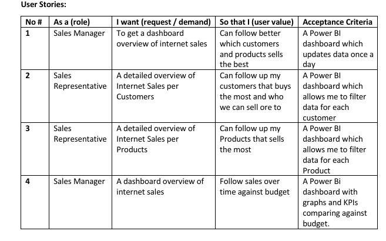

Project-1
Business Sales Analysis || SQL, POWER BI

Business Request And User Stories
The business request for this data analyst project was an executive sales report for sales managers. Based on the request that was made from the business, the following user stories were defined to fulfill delivery and ensure acceptance criteria were maintained throughout the project.
Key Concepts and Techniques:
-
Data Cleaning and Transformation Using SQL:
To create the necessary data model for doing analysis and fulfilling the business needs defined in the user stories the following tables were extracted using SQL.
-
Data Modeling using Power BI. This is to create connections between data tables to ensure full representation and data accuracy.
-
Data Visualization using PowerBI.
Key Insights:
-
Unveiling overview of sales over time, to know the trends.
-
Spotlight on the top-ten customers and products, paving the way for personalized marketing.
-
Insights on Sales in relation to Monthly Budget.
-
Leveraging product data to fine-tune product inventory and stockings.

In this data adventure, the project transformed from a simple data analysis task into an insightful journey, revealing the sales trends and customer preferences.